API
Square engine is available online at Github. If you have question setting up a game please check the tutorial page.
The 2 main classes
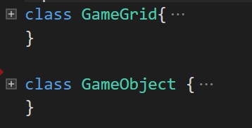The gameGrid class is the actual game engine itself. It creates and maintains the gameObjects, input events and canvas methods. The gameGrid tick() methods is called 60 times a second. The tick will then call the appropriate methods depending on its game state.
The states are: START, UPDATE, PAUSED and GAMEOVER. The STARTS state will just render the start screen and wait for input. The UPDATE is the running game and it will update all its game objects an drender them. The PAUSED state skips gameObject updates but calls the render method. The GAMEOVER stops all updates.
The gameObject is just a simple square that can be created by the gameGrid. You can change it's position, size, color, speed and many other attributes. You must override a few gameObject methods to get it to do stuff. The update() method is called 60 times per frame and it's mostly used to define behavior.
Extended gameObjects
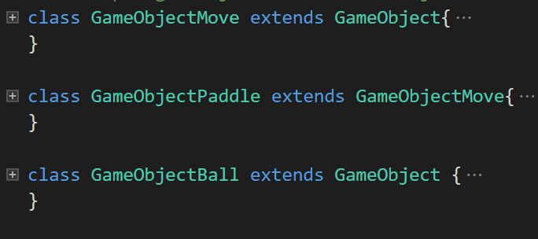Besides the basic gameObject, the library comes with 3 extended gameObjects. gameObjectMove is just a simple gameObject but be default it takes keyboard inputs to move. gameObjectPaddle is a gameObjectMove but with screen limits. gameObjectBall is a gameObject that keeps moving and bounces against the screen edges. These 3 classes are odeal to make simple games.
Other classes
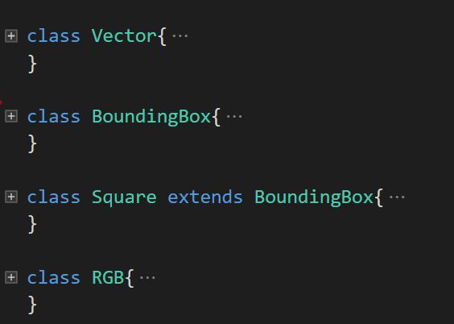The library also comes with a few convenience classes: 2D Vector class with methods to do vector math. A boundingBox class to help with collision detection. A square class that extends boundingBox and adds rendering and color methods. An RGB color class to help set gameObject colors.
GameGrid methods
Here's a list of the most important methods you want to override to create game behavior. These methods don't do anything so you can use them anyway you like. The most important one is probably update(). This method is called 60 times per second while the game is running.
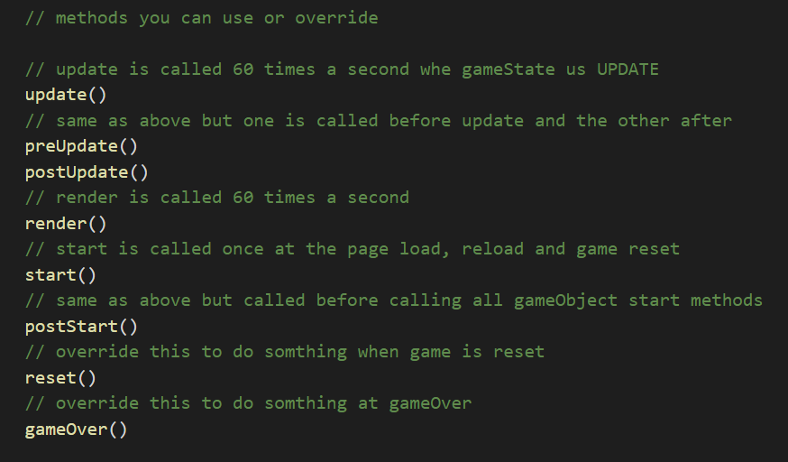These methods can be redefined to render squares or text at start, update, pause or gameOver. They are called 60 times per second.
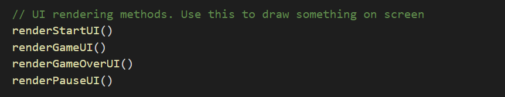These methods are called when user inputs keyboard or mouse data. They must have at least 1 argument, which is the input data.
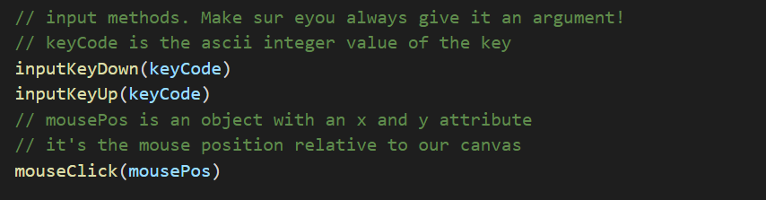These methods are NOT meant to be overriden. You use them to get data from the gameGrid.
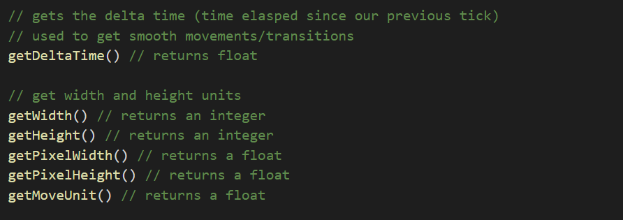These methods are are used to create and get gameObjects form the gameGrid. You can also add your new gameObject classes to the gameGrid factory. That way the gameGrid can create and keep track of your new gameObject.
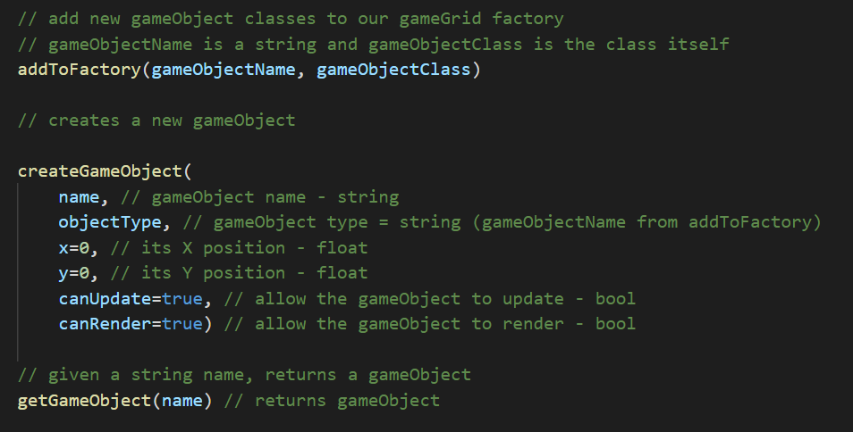Use these to print HTML text to the logger element.
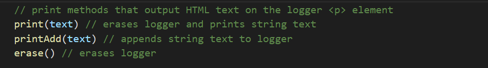You can use these methods to render squares and text on the screen.
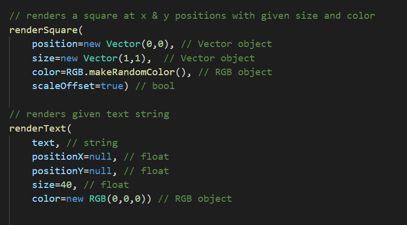If you want your game to be tiled based you can use these methods to help you get and set tile data. The gameGrid has a tile array that keeps track of tile objects.
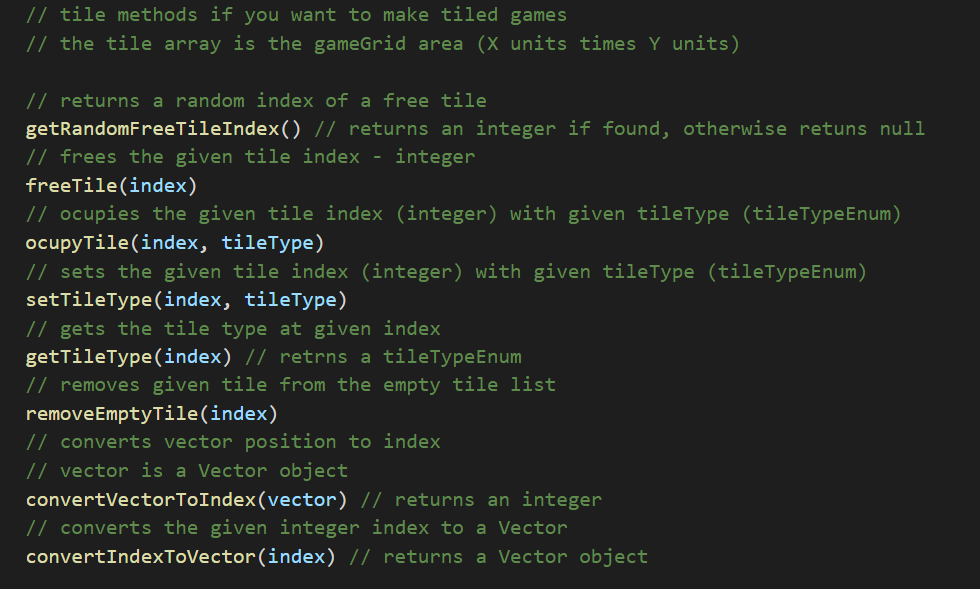GameObject methods
Same as the gameGrid the gameObject have the folowing input methods and methods meant to be overriden. The only difference is that you must have an argument on some of these methods. When they are called the gameGrid passes itself as the first argument. That way you can access the gameGrid and other gameObjects inside the gameGrid.
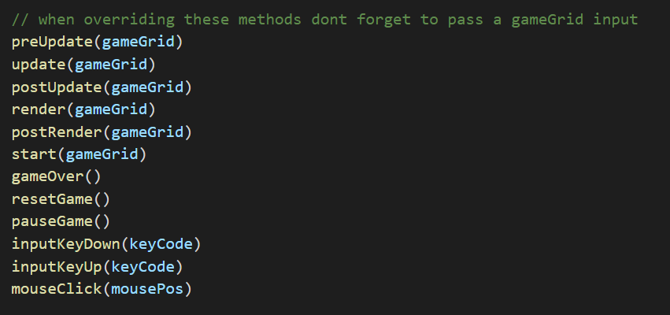These methods are meant to turn on/off some gameObject behavior or to get gameObject data.
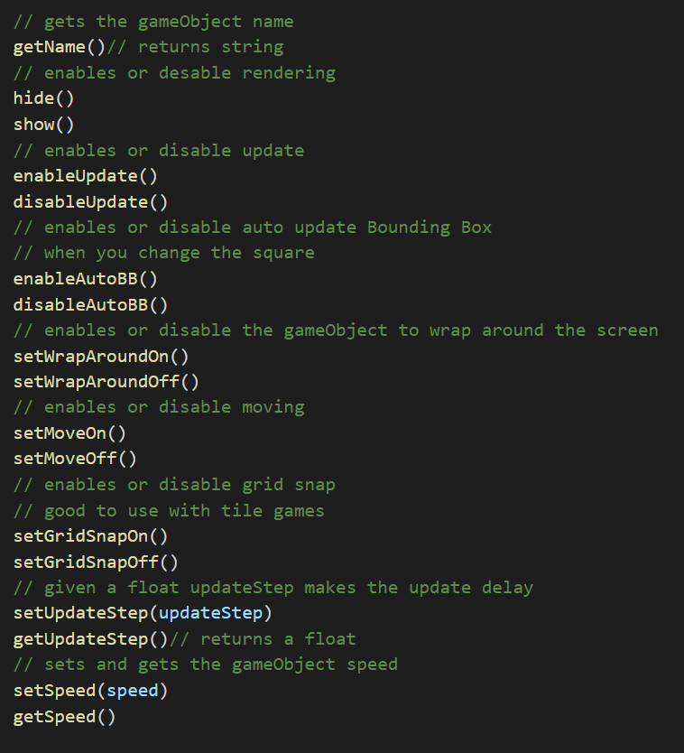The gameObject at creation has a 1 unit square by default, but you can use these methods to add/remove/edit them.
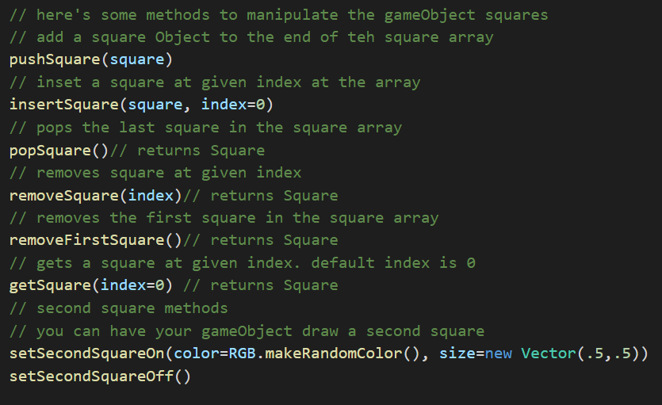Methods for changing the gameObject color.
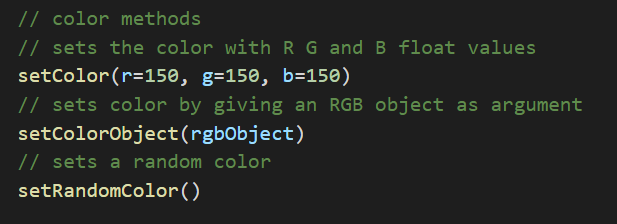You can use these methods to change your game object direction and position. The direction is a Vector that represents the direction that your gameObject is aiming to. The position is a Vector that represents its position in the screen X & Y plane.
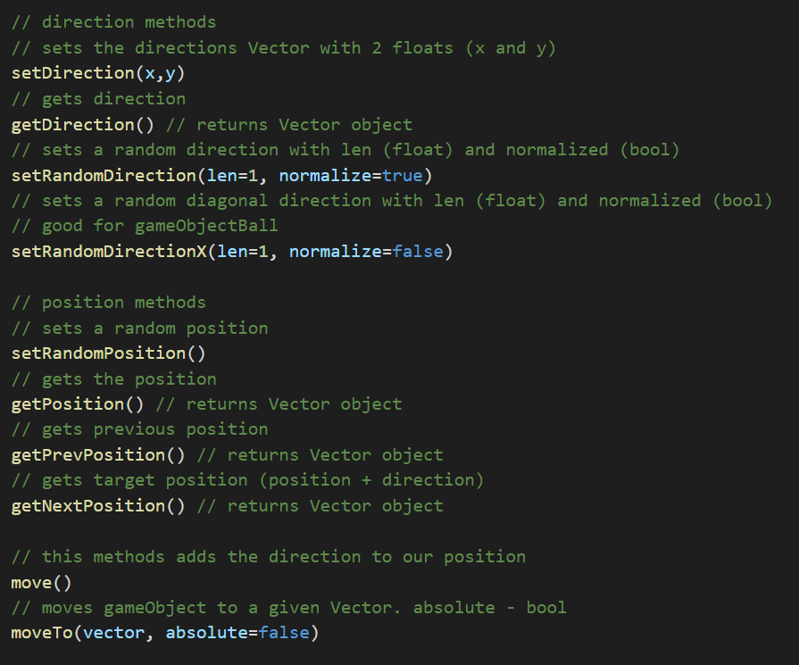You can use the screenCheck and check if a given Vector goes beyond the screen limit. When a gameObject goes past the screen it will call one of the 4 following screen methods. You can override them to create a game behavior.
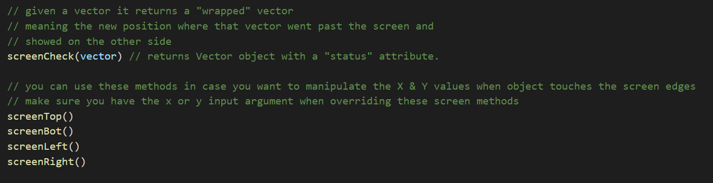A gameObject has the following methods to check for collision against Vectors and other gameObjects. Your gameObject uses its boundingBox to check collision. If you disable auto update boundingBox you can always call updateBoundingBox() to do so.
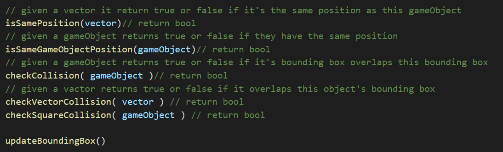Finally a gameObject has a few methods to work with tiles. Please look at gameGrid tile methods for more information.
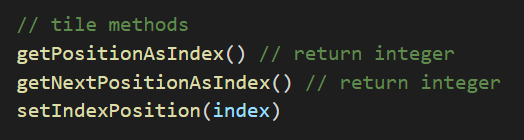BACK TO TOP